library(bsts) # load the bsts package
data(iclaims) # bring the initial.claims data into scope
plot(initial.claims$iclaimsNSA, lwd=2, ylab="Unemployment claims (thousand)")
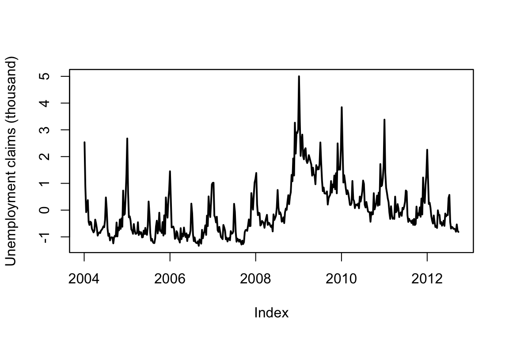
\[ \newcommand{\prob}[1]{\operatorname{P}\left(#1\right)} \newcommand{\Var}[1]{\operatorname{Var}\left(#1\right)} \newcommand{\sd}[1]{\operatorname{sd}\left(#1\right)} \newcommand{\Cor}[1]{\operatorname{Corr}\left(#1\right)} \newcommand{\Cov}[1]{\operatorname{Cov}\left(#1\right)} \newcommand{\E}[1]{\operatorname{E}\left(#1\right)} \newcommand{\defeq}{\overset{\text{\tiny def}}{=}} \DeclareMathOperator*{\argmax}{arg\,max} \DeclareMathOperator*{\argmin}{arg\,min} \DeclareMathOperator*{\mini}{minimize} \]
Time series data are everywhere, but time series modeling is a fairly specialized area within statistics and data science. This post describes the bsts software package, which makes it easy to fit some fairly sophisticated time series models with just a few lines of R code.
Time series data appear in a surprising number of applications, ranging from business, to the physical and social sciences, to health, medicine, and engineering. Forecasting (e.g. next month’s sales) is common in problems involving time series data, but explanatory models (e.g. finding drivers of sales) are also important. Time series data are having something of a moment in the tech blogs right now, with Facebook announcing their “Prophet” system for time series forecasting (Sean J. Taylor and Ben Letham (2017)), and Google posting about its forecasting system in this blog (Eric Tassone and Farzan Rohani (2017)).
This post summarizes the bsts R package, a tool for fitting Bayesian structural time series models. These are a widely useful class of time series models, known in various literatures as “structural time series,” “state space models,” “Kalman filter models,” and “dynamic linear models,” among others. Though the models need not be fit using Bayesian methods, they have a Bayesian flavor and the bsts package was built to use Bayesian posterior sampling.
The bsts package is open source. You can download it from CRAN with the R command install.packages("bsts"). It shares some features with Facebook and Google systems, but it was written with different goals in mind. The other systems were written to do “forecasting at scale,” a phrase that means something different in time series problems than in other corners of data science. The Google and Facebook systems focus on forecasting daily data into the distant future. The “scale” in question comes from having many time series to forecast, not from any particular time series being extraordinarily long. The bottleneck in both cases is the lack of analyst attention, so the systems aim to automate analysis as much as possible. The Facebook system accomplishes this using regularized regression, while the Google system works by averaging a large ensemble of forecasts. Both systems focus on daily data, and derive much of their efficiency through the careful treatment of holidays.
There are aspects of bsts which can be similarly automated, and a specifically configured version of bsts is a powerful member of the Google ensemble. However, bsts can also be configured for specific tasks by an analyst who knows whether the goal is short term or long term forecasting, whether or not the data are likely to contain one or more seasonal effects, and whether the goal is actually to fit an explanatory model, and not primarily to do forecasting at all.
The workhorse behind bsts is the structural time series model. These models are briefly described in the section Structural time series models. Then the software is introduced through a series of extended examples that focus on a few of the more advanced features of bsts. Example 1: Nowcasting includes descriptions of the local linear trend and seasonal state models, as well as spike and slab priors for regressions with large numbers of predictors. Example 2: Long term forecasting describes a situation where the local level and local linear trend models would be inappropriate. It offers a semilocal linear trend model as an alternative. Example 3: Recession modeling describes an model where the response variable is non-Gaussian. The goal in Example 3 is not to predict the future, but to control for serial dependence in an explanatory model that seeks to identify relevant predictor variables. A final section concludes with a discussion of other features in the package which we won’t have space (maybe “time” is a better word) to explore with fully fleshed out examples.
A structural time series model is defined by two equations. The observation equation relates the observed data \(y_t\) to a vector of latent variables \(\alpha_t\) known as the “state.” \[ y_t = Z_t^T\alpha_t + \epsilon_t. \]
The transition equation describes how the latent state evolves through time. \[ \alpha_{t+1} = T_t \alpha_t + R_t \eta_t. \]
The error terms \(\epsilon_t\) and \(\eta_t\) are Gaussian and independent of everything else. The arrays \(Z_t\) , \(T_t\) and \(R_t\) are structural parameters. They may contain parameters in the statistical sense, but often they simply contain strategically placed 0’s and 1’s indicating which bits of \(\alpha_t\) are relevant for a particular computation. An example will hopefully make things clearer.
The simplest useful model is the “local level model,” in which the vector \(\alpha_t\) is just a scalar \(\mu_t\). The local level model is a random walk observed in noise. \[\begin{align*} y_t = &\mu_t + \epsilon_t\\ \mu_{t+1} = &\mu_t + \eta_t. \end{align*}\] Here \(\alpha_t=\mu_t\) , and \(Z_t\) , \(T_t\), and \(R_t\) all collapse to the scalar value 1. Similar to Bayesian hierarchical models for nested data, the local level model is a compromise between two extremes. The compromise is determined by variances of \(\epsilon_t \sim N(0,\sigma^2)\) and \(\eta_t \sim N(0,\tau^2)\). If \(\tau^2=0\) then \(\mu_t\) is a constant, so the data are IID Gaussian noise. In that case the best estimator of \(y_{t+1}\) is the mean of \(y_1,\ldots,y_t\). Conversely, if \(\sigma^2=0\) then the data follow a random walk, in which case the best estimator of \(y_{t+1}\) is \(y_t\). Notice that in one case the estimator depends on all past data (weighted equally) while in the other it depends only on the most recent data point, giving past data zero weight. If both variances are positive then the optimal estimator of \(y_{t+1}\) winds up being “exponential smoothing,” where past data are forgotten at an exponential rate determined by the ratio of the two variances. Also notice that while the state in this model is Markov (i.e. it only depends on the previous state), the dependence among the observed data extends to the beginning of the series.
In the example above, one of the plots shows the price of the Apple stock from ‘2021-01-01’, to = 2022-12-31. The other plot is a sequence generated from a random walk model fitted to the Apple price data. Can you spot which one is which?
Structural time series models are useful because they are flexible and modular. The analyst chooses the structure of \(\alpha_t\) based on things like whether short or long term predictions are more important, whether the data contains seasonal effects, and whether and how regressors are to be included. Many of these models are standard, and can be fit using a variety of tools, such as the StructTS function distributed with base R or one of several R packages for fitting these models (with the dlm package (Petris (2010), Campagnoli, Petrone, and Petris (2009)) deserving special mention). The bsts package handles all the standard cases, but it also includes several useful extensions, described in the next few sections through a series of examples. Each example includes a mathematical description of the model and example bsts code showing how to work with the model using the bsts software. To keep things short, details about prior assumptions are largely avoided.
Example 19.1 (Nowcasting) S. Scott and Varian (2014) and S. L. Scott and Varian (2015) used structural time series models to show how Google search data can be used to improve short term forecasts (“nowcasts”) of economic time series. Figure below shows the motivating data set from S. Scott and Varian (2014), which is also included with the bsts package. The data consist of the weekly initial claims for unemployment insurance in the US, as reported by the US Federal Reserve. Like many official statistics they are released with delay and subject to revision. At the end of the week, the economic activity determining these numbers has taken place, but the official numbers are not published until several days later. For economic decisions based on these and similar numbers, it would help to have an early forecast of the current week’s number as of the close of the week. Thus the output of this analysis is truly a “nowcast” of data that has already happened rather than a “forecast” of data that will happen in the future.
library(bsts) # load the bsts package
data(iclaims) # bring the initial.claims data into scope
plot(initial.claims$iclaimsNSA, lwd=2, ylab="Unemployment claims (thousand)")There are two sources of information about the current value \(y_t\) in the initial claims series: past values \(y_{t-\tau}\) describing the time series behavior of the series, and contemporaneous predictors \(x_t\) from a data source which is correlated with \(y_t\) , but which is available without the delay exhibited by \(y_t\) . The time series structure shows an obvious trend (in which the financial and housing crises in 2008 - 2009 are apparent) as well as a strong annual seasonal pattern. The external data source explored by Scott and Varian was search data from Google trends with search queries such as “how to file for unemployment” having obvious relevance.
Scott and Varian modeled the data using a structural time series with three state components:
The model is \[\begin{align*} y_t = & \mu_t + \tau_t + \beta^T x_t + \epsilon_t\\ \mu_{t+1} = &\mu_t + \delta_t + \eta_{0t}\\ \delta_{t+1} = &\delta_t + \eta_{1t}\\ \tau_{t+1} = &-\sum_{s = 1}^{S-1}\tau_{t} + \eta_{2t}. \end{align*}\]
The trend component looks similar to the local level model above, but it has an extra term \(\delta_t\) . Notice that \(\delta_t\) is the amount of extra \(\mu\) you can expect as \(t\rightarrow t+1\), so it can be interpreted as the slope of the local linear trend. Slopes normally multiply some \(x\) variable, but in this case \(x=\Delta t\), which omitted from the equation because it is always 1. The slope evolves according to a random walk, which makes the trend an integrated random walk with an extra drift term. The local linear trend is a better model than the local level model if you think the time series is trending in a particular direction and you want future forecasts to reflect a continued increase (or decrease) seen in recent observations. Whereas the local level model bases forecasts around the average value of recent observations, the local linear trend model adds in recent upward or downward slopes as well. As with most statistical models, the extra flexibility comes at the price of extra volatility.
The best way to understand the seasonal component \(\tau_t\) is in terms of a regression with seasonal dummy variables. Suppose you had quarterly data, so that \(S=4\). You might include the annual seasonal cycle using 3 dummy variables, with one left out as a baseline. Alternatively, you could include all four dummy variables but constrain their coefficients to sum to zero. The seasonal state model takes the latter approach, but the constraint is that the \(S\) most recent seasonal effects must sum to zero in expectation. This allows the seasonal pattern to slowly evolve. Scott and Varian described the annual cycle in the weekly initial claims data using a seasonal state component with \(S=52\). Of course weeks don’t neatly divide years, but given the small number of years for which Google data are available the occasional one-period seasonal discontinuity was deemed unimportant.
Let’s ignore the regression component for now and fit a bsts model with just the trend and seasonal components.
ss <- AddLocalLinearTrend(list(), initial.claims$iclaimsNSA)
ss <- AddSeasonal(ss, initial.claims$iclaimsNSA, nseasons = 52)
model1 <- bsts(initial.claims$iclaimsNSA,state.specification = ss,niter = 1000)The first thing to do when fitting a bsts model is to specify the contents of the latent state vector \(\alpha_t\). The bsts package offers a library of state models, which are included by adding them to a state specification (which is just a list with a particular format). The call to AddLocalLinearTrend above adds a local linear trend state component to an empty state specification (the list() in its first argument). The call to AddSeasonal adds a seasonal state component with 52 seasons to the state specification created on the previous line. The state vector \(\alpha_t\) is formed by concatenating the state from each state model. Similarly, the vector \(Z_t\) is formed by concatenating the \(Z\) vectors from the two state models, while the matrices \(T_t\) and \(R_t\) are combined in block-diagonal fashion.
The state specification is passed as an argument to bsts, along with the data and the desired number of MCMC iterations. The model is fit using an MCMC algorithm, which in this example takes about 20 seconds to produce 1000 MCMC iterations. The returned object is a list (with class attribute bsts). You can see its contents by typing
names(model1)## [1] "sigma.obs" "sigma.trend.level"
## [3] "sigma.trend.slope" "sigma.seasonal.52"
## [5] "final.state" "state.contributions"
## [7] "one.step.prediction.errors" "log.likelihood"
## [9] "has.regression" "state.specification"
## [11] "prior" "timestamp.info"
## [13] "model.options" "family"
## [15] "niter" "original.series"The first few elements contain the MCMC draws of the model parameters. Most of the other elements are data structures needed by various S3 methods (plot, print, predict, etc.) that can be used with the returned object. MCMC output is stored in vectors (for scalar parameters) or arrays (for vector or matrix parameters) where the first index in the array corresponds to MCMC iteration number, and the remaining indices correspond to dimension of the deviate being drawn.
Most users won’t need to look inside the returned bsts object because standard tasks like plotting and prediction are available through familiar S3 methods. For example, there are several plot methods available.
par(mar=c(4,4,2,0))
plot(model1)
plot(model1, "components")The Figure 19.4 (a) above shows the Posterior distribution of model state. Blue circles are actual data points. The Figure 19.4 (b) shows the individual state components. The plot looks fuzzy because it is showing the marginal posterior distribution at each time point.
The default plot method plots the posterior distribution of the conditional mean \(Z_t^T\alpha_t\) given the full data \(y=y_1,\ldots,y_T\). Other plot methods can be accessed by passing a string to the plot function. For example, to see the contributions of the individual state components, pass the string “components” as a second argument, as shown above. Figure below shows the output of these two plotting functions. You can get a list of all available plots by passing the string help as the second argument.
To predict future values there is a predict method. For example, to predict the next 12 time points you would use the following commands.
par(mar=c(4,4,0,0))
pred1 <- predict(model1, horizon = 12)
plot(pred1, plot.original = 156)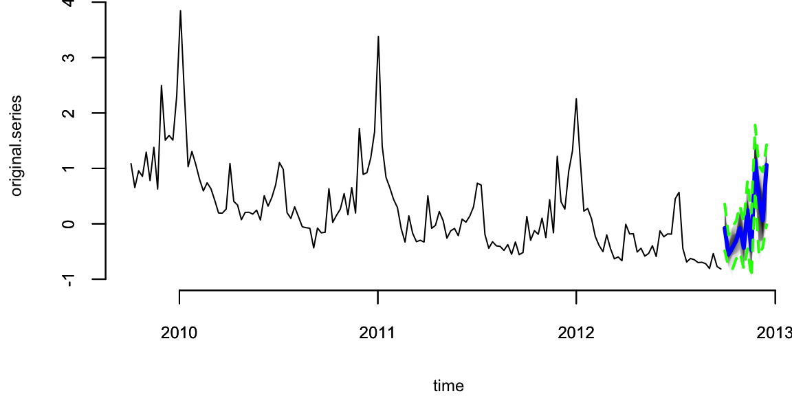
The output of predict is an object of class bsts.prediction, which has its own plot method. The plot.original = 156 argument says to plot the prediction along with the last 156 time points (3 years) of the original series.
Now let’s add a regression component to the model described above, so that we can use Google search data to improve the forecast. The bsts package only includes 10 search terms with the initial claims data set, to keep the package size small, but S. Scott and Varian (2014) considered examples with several hundred predictor variables. When faced with large numbers of potential predictors it is important to have a prior distribution that induces sparsity. A spike and slab prior is a natural way to express a prior belief that most of the regression coefficients are exactly zero.
A spike and slab prior is a prior on a set of regression coefficients that assigns each coefficient a positive probability of being zero. Upon observing data, Bayes’ theorem updates the inclusion probability of each coefficient. When sampling from the posterior distribution of a regression model under a spike and slab prior, many of the simulated regression coefficients will be exactly zero. This is unlike the “lasso” prior (the Laplace, or double-exponential distribution), which yields MAP estimates at zero but where posterior simulations will be all nonzero. You can read about the mathematical details of spike and slab priors in S. Scott and Varian (2014).
When fitting bsts models that contain a regression component, extra arguments captured by ... are passed to the SpikeSlabPrior function from the BoomSpikeSlab package. This allows the analyst to adjust the default prior settings for the regression component from the bsts function call. To include a regression component in a bsts model, simply pass a model formula as the first argument.
# Fit a `bsts` model with expected model size 1, the default.
model2 <- bsts(iclaimsNSA ~ .,state.specification = ss,niter = 1000,data = initial.claims)
# Fit a `bsts` model with expected model size 5, to include more coefficients.
model3 <- bsts(iclaimsNSA ~ .,state.specification = ss,niter = 1000,data = initial.claims,expected.model.size = 5) # Passed to SpikeSlabPrior.To examine the output you can use the same plotting functions as before. For example, to see the contribution of each state component you can type
par(mar=c(4,4,3,0))
plot(model2, "comp")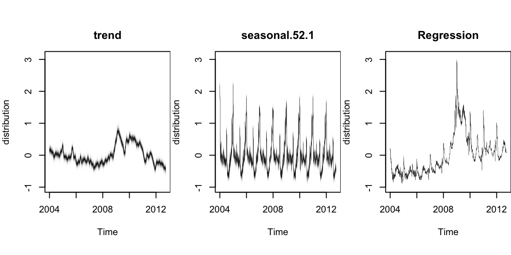
It produces the contribution of each state component to the initial claims data, assuming a regression component with default prior. Compare to the previous model. The regression component is explaining a substantial amount of variation in the initial claims series.
There are also plotting functions that you can use to visualize the regression coefficients. The following commands plot posterior inclusion probabilities for predictors in the “initial claims” nowcasting example assuming an expected model size of 1 and 5.
par(mar=c(4,0,0,0))
plot(model2, "coef")
plot(model3, "coef")The search term “unemployment office” shows up with high probability in both models. Increasing the expected model size from 1 (the default) to 5 allows other variables into the model, though “Idaho unemployment” is the only one that shows up with high probability.
Those probabilities are calculated from the histogram of the samples of each \(\beta\) calculated by the estimation algorithm (MCMC)
par(mar=c(4,4,0,0))
# unemployment.office
hist(model3$coefficients[,10], breaks = 40, main="",xlab="unemployment.office", col="lightblue")
# pennsylvania.unemployment
hist(model3$coefficients[,3], breaks = 40, main = "", xlab="pennsylvania.unemployment", col="lightblue")
hist(model2$coefficients[,3], breaks = 40, main = "", xlab="pennsylvania.unemployment", col="lightblue")As part of the model fitting process, the algorithm generates the one-step-ahead prediction errors \(y_t - E(y_t | Y_{t-1}, \theta)\), where \(Y_{t-1}=y_1,\ldots,y_{t-1}\), and the vector of model parameters \(\theta\) is fixed at its current value in the MCMC algorithm. The one-step-ahead prediction errors can be obtained from the bsts model by calling bsts.prediction.errors(model1).
The one step prediction errors are a useful diagnostic for comparing several bsts models that have been fit to the same data. They are used to implement the function CompareBstsModels, which is called as shown below.
CompareBstsModels(list("Model 1" = model1,
"Model 2" = model2,
"Model 3" = model3),
colors = c("black", "red", "blue"))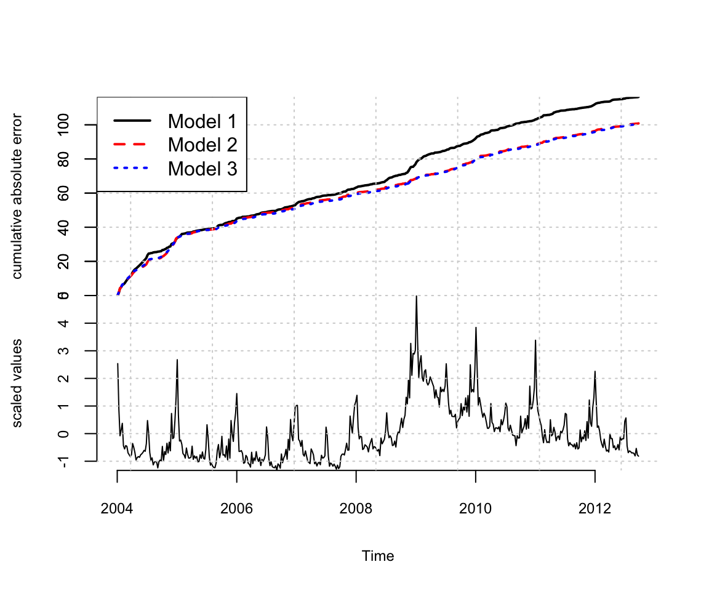
The bottom panel shows the original series. The top panel shows the cumulative total of the mean absolute one step prediction errors for each model. The final time point in the top plot is proportional to the mean absolute prediction error for each model, but plotting the errors as a cumulative total lets you see particular spots where each model encountered trouble, rather than just giving a single number describing each model’s predictive accuracy. This figure shows that the Google data help explain the large spike near 2009, where model 1 accumulates errors at an accelerated rate, but models 2 and 3 continue accumulating errors at about the same rate they had been before. The fact that the lines for models 2 and 3 overlap in this figure means that the additional predictors allowed by the relaxed prior used to fit model 3 do not yield additional predictive accuracy.
Example 19.2 (Long term forecasting) A common question about bsts is “which trend model should I use?” To answer that question it helps to know a bit about the different models that the bsts software package provides, and what each model implies. In the local level model the state evolves according to a random walk: \[
\mu_{t+1}=\mu_t+\eta_t.
\] If you place your eye at time 0 and ask what happens at time \(t\) , you find that \(\mu_t \sim N(\mu_0,t\sigma^2\eta)\). The variance continues to grow with \(t\), all the way to \(t=\infty\). The local linear trend is even more volatile. When forecasting far into the future the flexibility provided by these models becomes a double edged sword, as local flexibility in the near term translates into extreme variance in the long term.
An alternative is to replace the random walk with a stationary AR process. For example \[ \mu_{t+1}=\rho\mu_t+\eta_t, \]
with \(\eta_t \sim N(0,\sigma^2\eta)\) and \(|\rho|<1\). This model has stationary distribution \[
\mu_{\infty} \sim N\left(0,\dfrac{\sigma^2_{\eta}}{1-\rho^2}\right),
\] which means that uncertainty grows to a finite asymptote, rather than infinity, in the distant future. bsts offers autoregressive state models through the functions AddAr, when you want to specify a certain number of lags, and AddAutoAr when you want the software to choose the important lags for you.
A hybrid model modifies the local linear trend model by replacing the random walk on the slope with a stationary AR(1) process, while keeping the random walk for the level of the process. The bsts package refers to this is the “semilocal linear trend” model. \[\begin{align*}
\mu_{t+1}=& \mu_t+\delta_t+\eta_{0t}\\
\delta_{t+1}=& D+\rho(\delta_t-D)+\eta_{1t}
\end{align*}\] The \(D\) parameter is the long run slope of the trend component, to which \(\delta_t\) will eventually revert. However \(\delta_t\) can have short term autoregressive deviations from the long term trend, with memory determined by \(\rho\). Values of \(\rho\) close to 1 will lead to long deviations from \(D\). To see the impact this can have on long term forecasts, consider the time series of daily closing values for the S&P 500 stock market index over the last 5 years, shown below.
GSPC = read.csv("../../data/GSPC.csv")
GSPC = xts(GSPC, order.by = as.Date(rownames(GSPC), "%Y-%m-%d"))
knitr::kable(head(GSPC))
plot(GSPC$GSPC.Adjusted, main="")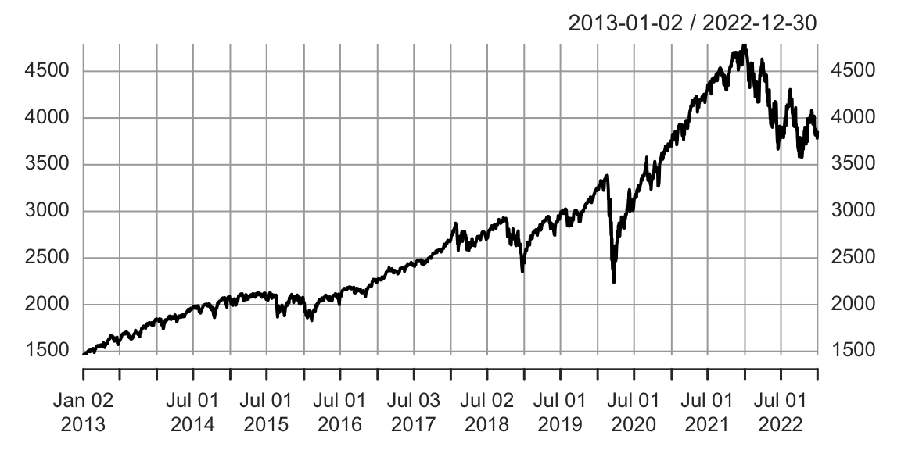
Consider two forecasts of the daily values of this series for the next 360 days. The first assumes the local linear trend model. The second assumes the semilocal linear trend.
sp500 = GSPC$GSPC.Adjusted
ss1 <- AddLocalLinearTrend(list(), sp500)
model1 <- bsts(sp500, state.specification = ss1, niter = 1000)
ss2 <- AddSemilocalLinearTrend(list(), sp500)
model2 <- bsts(sp500, state.specification = ss2, niter = 1000)Figure below shows long term forecasts of the S&P 500 closing values under the (left) local linear trend and (right) semilocal linear trend state models.
load("../../data/timeseries/model12-sp500.RData")
par(mar=c(4,4,0,1))
pred1 <- predict(model1, horizon = 360)
pred2 <- predict(model2, horizon = 360)
plot(pred2, plot.original = 360, ylim = range(pred1))
plot(pred1, plot.original = 360, ylim = range(pred1))Not only the forecast expectations from the two models are different, but the forecast errors from the local linear trend model are implausibly wide, including a small but nonzero probability that the S&P 500 index could close near zero in the next 360 days. The error bars from the semilocal linear trend model are far more plausible, and more closely match the uncertainty observed over the life of the series thus far.
Example 19.3 (Recession modeling using non-Gaussian data) Although we have largely skipped details about how the bsts software fits models, the Gaussian error assumptions in the observation and transition equations are important for the model fitting process. Part of that process involves running data through the Kalman filter, which assumes Gaussian errors in both the state and transition equations. In many settings where Gaussian errors are obviously inappropriate, such as for binary or small count data, one can introduce latent variables that give the model a conditionally Gaussian representation. Well known “data augmentation” methods exist for probit regression (Albert (1993)) and models with student-T errors (Rubin (2015)). Somewhat more complex methods exist for logistic regression (Frühwirth-Schnatter and Frühwirth (2007), Held and Holmes (2006), Gramacy and Polson (2012)) and Poisson regression (Frühwirth-Schnatter et al. (2008)). Additional methods exist for quantile regression (Benoit and Van den Poel (2012)), support vector machines (Polson and Scott (2011)), and multinomial logit regression (Frühwirth-Schnatter and Frühwirth (2010)). These are not currently provided by the bsts package, but they might be added in the future.
To see how non-Gaussian errors can be useful, consider the analysis done by Berge, Sinha, and Smolyansky (2016) who used Bayesian model averaging (BMA) to investigate which of several economic indicators would best predict the presence or absence of a recession. We will focus on their nowcasting example, which models the probability of a recession at the same time point as the predictor variables. Berge, Sinha, and Smolyansky (2016) also analyzed the data with the predictors at several lags.
The model used in Berge, Sinha, and Smolyansky (2016) was a probit regression, with Bayesian model averaging used to determine which predictors should be included. The response variable was the the presence or absence of a recession (as determined by NBER).
dat <- read.csv("../../data/timeseries/rec_data_20160613.csv")
rec = ts(dat$nber, start=c(1973, 1), end=c(2016, 5), frequency=12)
plot(rec, type='l', col='blue', ylab="Recession")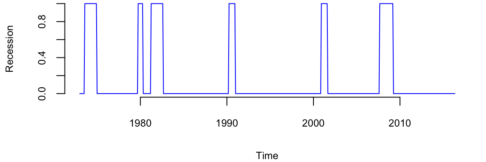
The BMA done by Berge, Sinha, and Smolyansky (2016) is essentially the same as fitting a logistic regression under a spike-and-slab prior with the prior inclusion probability of each predictor set to 1/2 . That analysis can be run using the BoomSpikeSlab R package (S. L. Scott (2022)), which is similar to bsts, but with only a regression component and no time series.
The logistic regression model is highly predictive, but it ignores serial dependence in the data. To capture serial dependence, consider the following dynamic logistic regression model with a local level trend model. \[\begin{align*} \mathrm{logit}(p_t)= & \mu_t+\beta^Tx_t\\ \mu_{t+1}= & \mu_t+\eta_t \end{align*}\] Here \(p_t\) is the probability of a recession at time \(t\) ,and \(x_t\) is the set of economic indicators used by Berge, Sinha, and Smolyansky (2016) in their analysis. The variables are listed in the table below
| Variable | Definition/notes | Transformation |
|---|---|---|
| Financial Variables | ||
| Slope of yield curve | 10-year Treasury less 3-month yield | |
| Curvature of yield curve | 2 x 2-year minus 3-month and 10-year | |
| GZ index | Gilchrist and Zakrajsek (AER, 2012) | |
| TED spread | 3-month ED less 3-month Treasury yield | |
| BBB corporate spread | BBB less 10-year Treasury yield | |
| S 500, 1-month return | 1-month log diff. | |
| S 500, 3-month return | 3-month log diff. | |
| Trade-weighted dollar | 3-month log diff. | |
| VIX | CBOE and extended following Bloom | |
| Macroeconomic Indicators | ||
| Real personal consumption expend. | 3-month log diff. | |
| Real disposable personal income | 3-month log diff. | |
| Industrial production | 3-month log diff. | |
| Housing permits | 3-month log diff. | |
| Nonfarm payroll employment | 3-month log diff. | |
| Initial claims | 4-week moving average | 3-month log diff. |
| Weekly hours, manufacturing | 3-month log diff. | |
| Purchasing managers index | 3-month log dif |
First, we prepare the data by shifting it by \(h\), which is the forecast horison.
h=0
# predict h months ahead
y.h <- dat$nber[-(1:h)]
hh <- length(dat$nber) - h
dat.h <- dat[1:hh,-1]
# h=0 is a special case
if(h==0) y.h <- dat$nber
if(h==0) dat.h <- dat[,-1]To fit this model, we can issue the commands shown below.
# Because 'y' is 0/1 and the state is on the logit scale the default prior
# assumed by AddLocalLevel won't work here, so we need to explicitly set the
# priors for the variance of the state innovation errors and the initial value
# of the state at time 0. The 'SdPrior' and 'NormalPrior' functions used to
# define these priors are part of the Boom package. See R help for
# documentation. Note the truncated support for the standard deviation of the
# random walk increments in the local level model.
# A more complex model
ss <- AddLocalLevel(list(),y.h,
sigma.prior = SdPrior(sigma.guess = .1,
sample.size = 1,
upper.limit = 1),
initial.state.prior = NormalPrior(0, 5))
# Tell bsts that the observation equation should be a logistic regression by
# passing the 'family = "logit"' argument.
ts.model <- bsts(y.h ~ ., ss, data = dat.h, niter = 20000,family = "logit", expected.model.size = 10)Not let’s plot the results
par(mar=c(4,4,0,0))
plot(ts.model,"coef")
plot(ts.model)
lines(y.h, lwd=3,col="blue")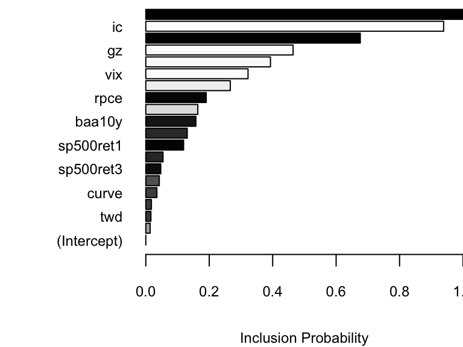
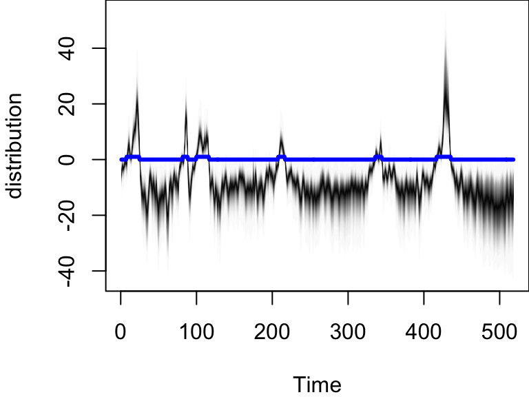
plot(ts.model,"predictors")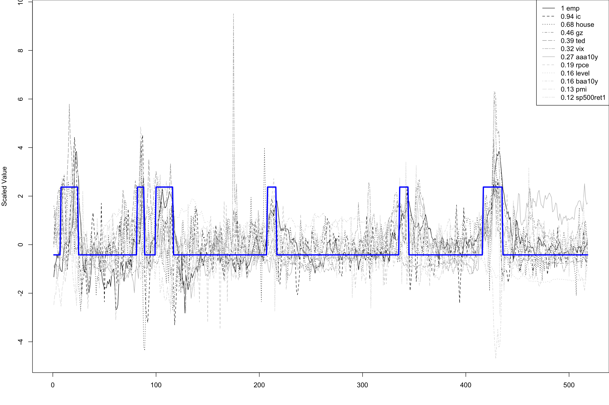
Notice, the distribution of \(p_t\), it is moving to very large values during a recession, and to very small values outside of a recession. This effect captures the strong serial dependence in the recession data. Recessions are rare, but once they occur they tend to persist. Assuming independent time points is therefore unrealistic, and it substantially overstates the amount of information available to identify logistic regression coefficients.
The preceding examples have shown that the bsts software package can handle several nonstandard, but useful, time series applications. These include the ability to handle large numbers of contemporaneous predictors with spike and slab priors, the presence of trend models suitable for long term forecasting, and the ability to handle non-Gaussian data. We have run out of space, but bsts can do much more.
For starters there are other state models you can use. Bsts has elementary support for holidays. It knows about 18 US holidays, and has capacity to add more, including holidays that occur on the same date each year, holidays that occur on a fixed weekday of a fixed month (e.g. 3rd Tuesday in February, or last Monday in November). The model for each holiday is a simple random walk, but look for future versions to have improved holiday support via Bayesian shrinkage.
Bsts offers support for multiple seasonalities. For example, if you have several weeks of hourly data then you will have an hour-of-day effect as well as a day-of-week effect. You can model these using a single seasonal effect with 168 seasons (which would allow for different hourly effects on weekends and weekdays), or you can assume additive seasonal patterns using the season.duration argument to AddSeasonal,
ss <- AddSeasonal(ss, y, nseasons = 24)
ss <- AddSeasonal(ss, y, nseasons = 7, season.duration = 24)The latter specifies that each daily effect should remain constant for 24 hours. For modeling physical phenomena, bsts also offers trigonometric seasonal effects, which are sine and cosine waves with time varying coefficients. You obtain these by calling AddTrig. Time varying effects are available for arbitrary regressions with small numbers of predictor variables through a call to AddDynamicRegression.
In addition to the trend models discussed so far, the function AddStudentLocalLinearTrend gives a version of the local linear trend model that assumes student-t errors instead of Gaussian errors. This is a useful state model for short term predictions when the mean of the time series exhibits occasional dramatic jumps. Student-t errors can be introduced into the observation equation by passing the family = "student" argument to the bsts function call. Allowing for heavy tailed errors in the observation equation makes the model robust against individual outliers, while heavy tails in the state model provides robustness against sudden persistent shifts in level or slope. This can lead to tighter prediction limits than Gaussian models when modeling data that have been polluted by outliers. The observation equation can also be set to a Poisson model for small count data if desired.
Finally, the most recent update to bsts supports data with multiple observations at each time stamp. The Gaussian version of the model is \[\begin{align*}
y_{it} = &\beta^T x_{it} + Z_t^T\alpha_t + \epsilon_{it}\\
\alpha_{t+1} = & T_t \alpha_t + R_t \eta_t,
\end{align*}\] which is best understood as a regression model with a time varying intercept.
A recent post by the Amazon Science group Amazon (2021) describes the evolution of the time series algorithms used for forecasting from 2007 to 2021. Figure below shows the entire evolution of the algorithms.

They went from standard textbook time series forecasting methods to make predictions to the quantile-based transformer models. The main problem of the traditional TS models is that they assume stationary. A stationary time series is one whose properties do not depend on the time at which the series is observed. For exmaple, a white noise series is stationary — it does not matter when you observe it, it should look much the same at any point in time.
yt = rnorm(100)
plot(yt,type='l')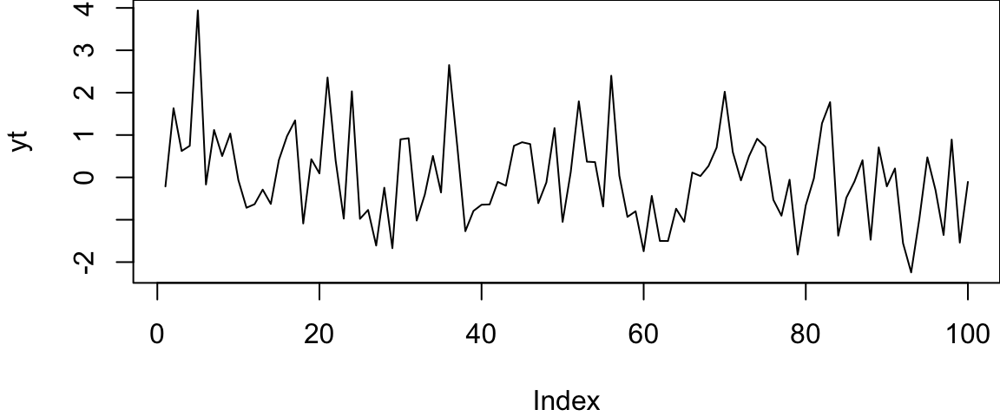
In other words, all the coefficients of a time series model do not change over time. We know how to deal with trends and seasonality quite well. Thus, those types of non-stationary are not an issue. Below some of the example of time series data. Although most of those are not stationary, we can model them using traditional techniques (Hyndman and Athanasopoulos (2021)).
However, when you try to forecast for a time series with no prior history or non-recurrent “jumps”, like recessions, traditional models are unlikely to work well.
Amazon used a sequence of “patches” to hack the model and to make it produce useful results. All of those reacquired manual feature engineering and led to less transparent and fragile models. One solution is to use random forests.
Most estimators during prediction return \(E(Y|X)\), which can be interpreted as the answer to the question, what is the expected value of your output given the input?
Quantile methods, return \(y\) at \(q\) for which \(F(Y=y|X)=q\) where \(q\) is the percentile and \(y\) is the quantile. One quick use-case where this is useful is when there are a number of outliers which can influence the conditional mean. It is sometimes important to obtain estimates at different percentiles, (when grading on a curve is done for instance.)
Note, Bayesian models return the entire distribution of \(P(Y|X)\).
It is fairly straightforward to extend a standard decision tree to provide predictions at percentiles. When a decision tree is fit, the trick is to store not only the sufficient statistics of the target at the leaf node such as the mean and variance but also all the target values in the leaf node. At prediction, these are used to compute empirical quantile estimates.
The same approach can be extended to Random Forests. To estimate \(F(Y=y|x)=q\) each target value in training \(y\)s is given a weight. Formally, the weight given to \(y_j\) while estimating the quantile is \[ \frac{1}{T} \sum_{t=1}^{T} \frac{\mathbb{1}(y_j \in L(x))}{\sum_{i=1}^N \mathbb{1}(y_i \in L(x))}, \] where \(L(x)\) denotes the leaf that \(x\) falls into.
Informally, what it means that for a new unknown sample, we first find the leaf that it falls into at each tree. Then for each \((X, y)\) in the training data, a weight is given to \(y\) at each tree in the following manner.
These weights for each y are summed up across all trees and averaged. Now since we have an array of target values and an array of weights corresponding to these target values, we can use this to measure empirical quantile estimates.nding to these target values, we can use this to measure empirical quantile estimates.
Motivated by the success of gradient boositg model for predicting Walmart sales (kaggle (2020)), Januschowski et al. (2022) tries to explain why tree-based methods were so widely used for forecasting.
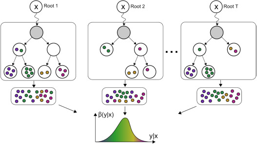